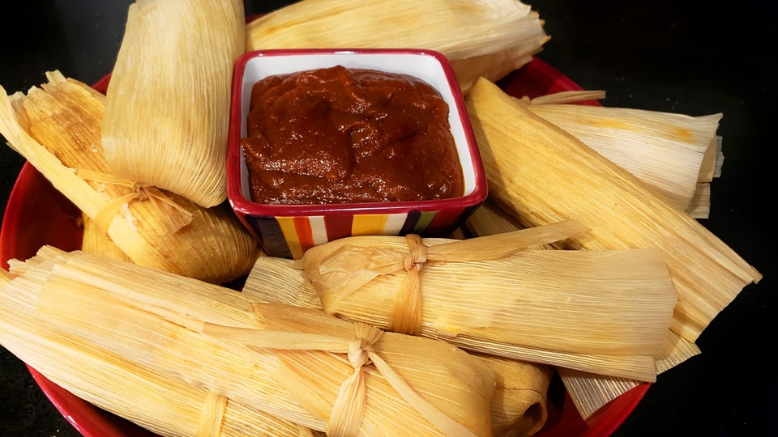

New Mexican Tamales

Ingredients
- 3 lbs pork butt or shoulder, trimmed of fat
- 5 cloves of garlic, peeled
- 1 tsp black peppercorns
- 2 bay leaves
- 1 tsp salt
- 4 cups beef or vegetable stock
- 4 cups Hatch red chile sauce
- 3-4 ancho chile powder
- 2 lbs masa
- lard
- 35 large corn husks
Directions
- Place pork in pot with 3 cups stock, salt, garlic, peppercorns, and
bay leaves. Slow cook for around 4 hours.
- Boil corn husks in a large pot, allow to soak for a few hours so that
they become pliable.
- Allow pork to stand until cool, then shred with two forks.
- Prepare sauce. In a saucpot, mix 1 cup stock, 4 cups red chile sauce,
and ancho chile powder. Stir and reduce until sauce is a bit thicker.
- Soak shredded pork with red sauce.
- Prepare masa. Hand-mix masa, lard, water, and a few dashes of salt
until masa dough is light, fluffy, and sticky enough that it holds together.
- Assemble tamales! Apply a thin layer of masa dough over the corn husk, then place
a fork-full of pork on the masa, and roll your tamale.
*How to roll a tamale: fold one side over the top of the meat, and release
the masa from the corn husk. Repeat on the other side and bottom. Leaving the top open
is optional! Once the masa is enveloping the pork, fold the husk around the tamale.
This will ensure your husk doesn't get cooked into the tamale.
- Steam tamales for about an hour, making sure the tamales are not touching any water.
Serve with extra red sauce!
New Mexican tradition
Want to learn more about the history and traditions of tamales in New Mexico?
Cocina has a great article.
Contact Me
Email me at
ambermoon.peterson@umconnect.umt.edu
Address:
32 Campus Drive
Missoula, MT 59812